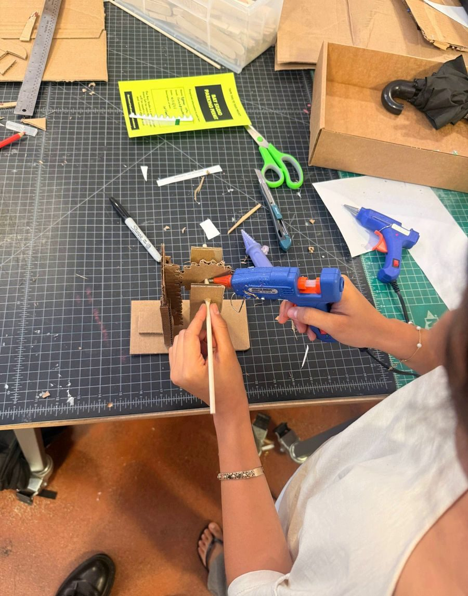
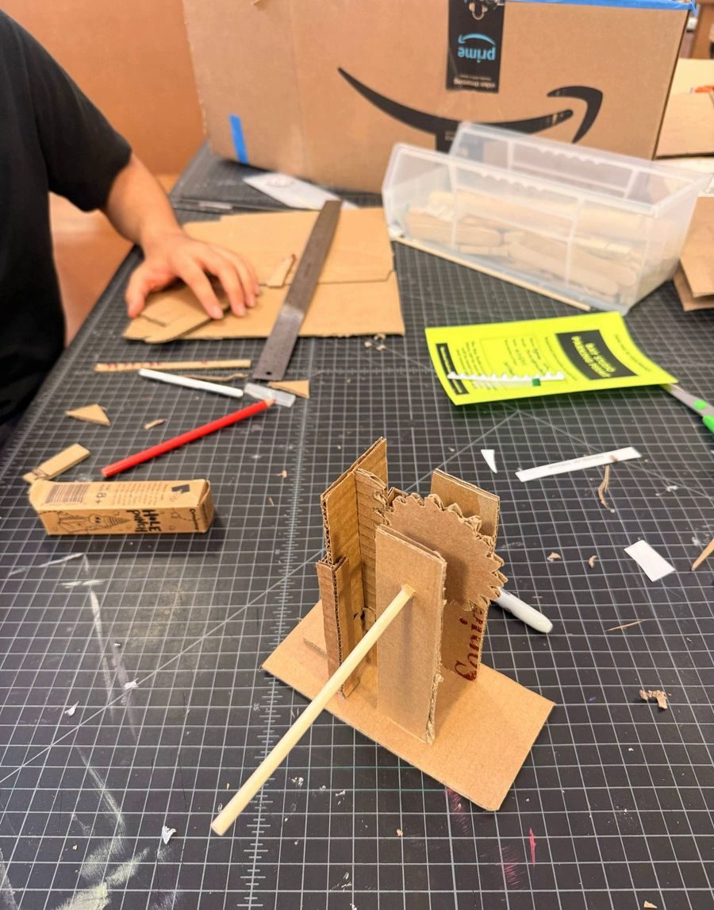
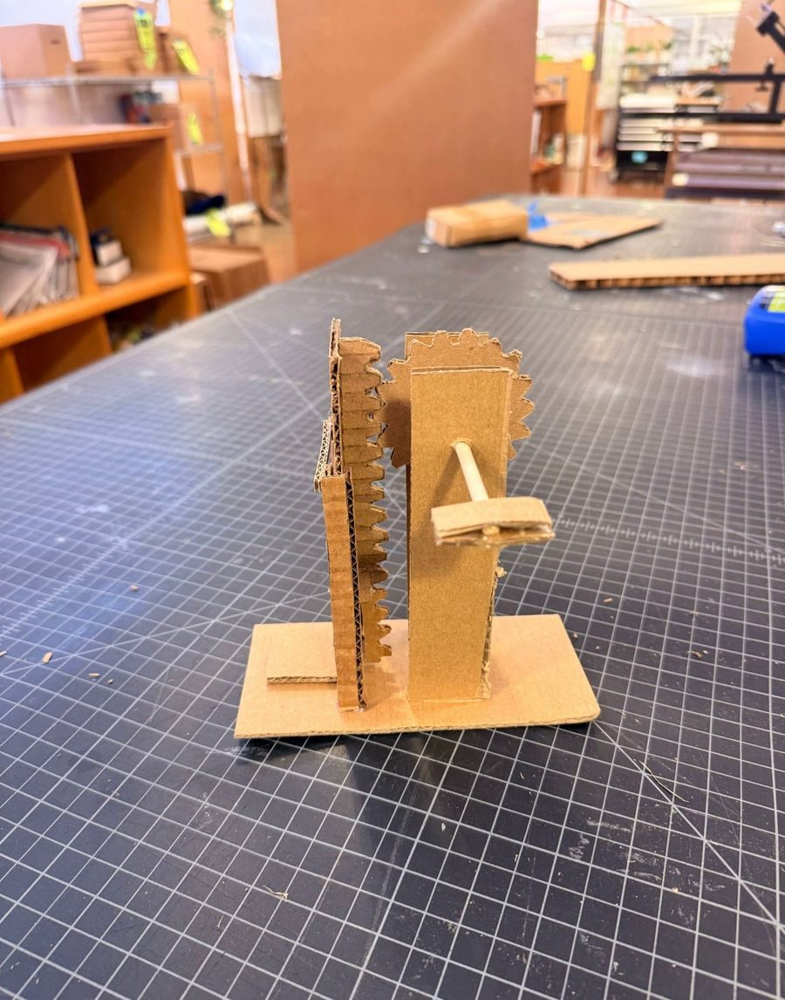
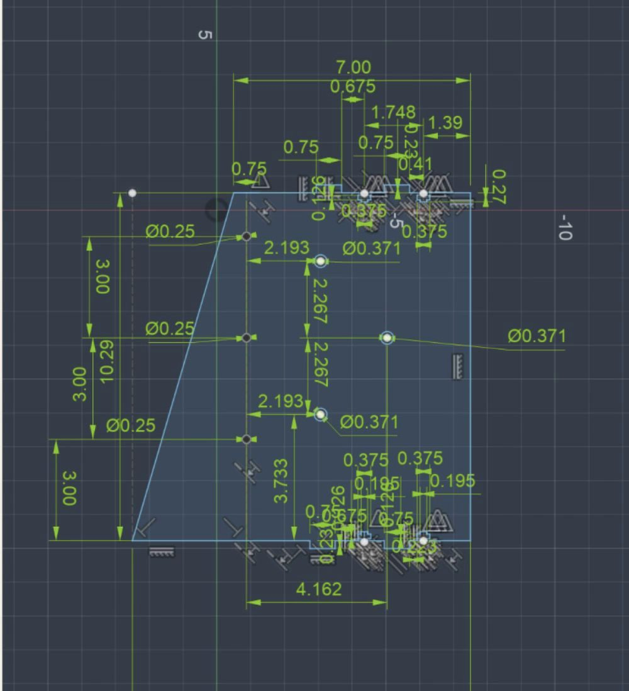
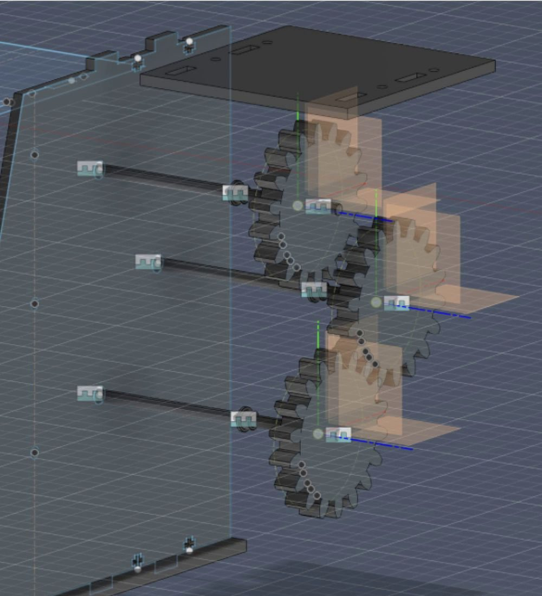
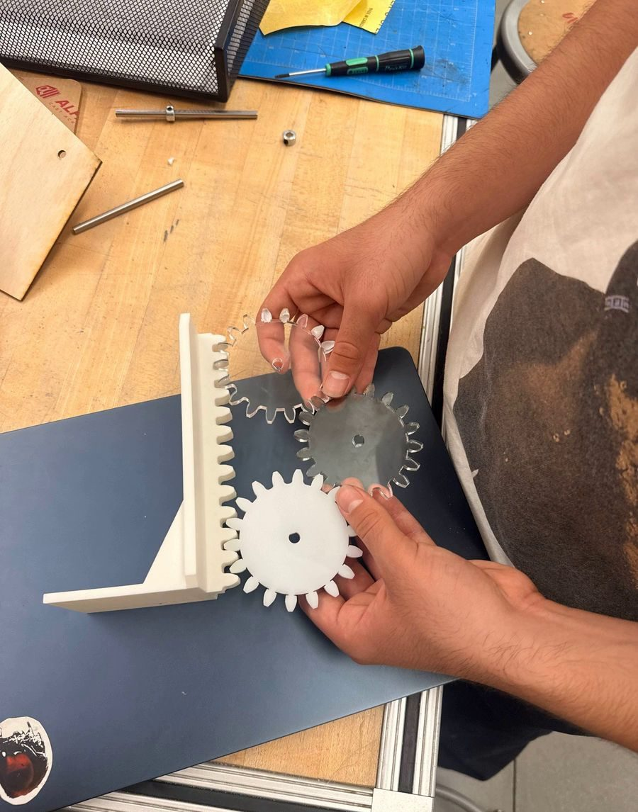

A compact rack-and-pinion lift that raises a 2.5 lb load with a single turn of the crank.

The prompt cast us as shipwrights for a pirate crew: build a hoist, small enough to hide beneath the deck, that lifts heavy chests of treasure straight up using nothing but a turning motion.
- Lift a 2.5 lb steel weight at least 6 inches, in a straight vertical line
- Input limited to one hand turning a single component
- Fit inside a 12 × 12 × 12 inch envelope at all times
- No winches, pulleys, rope, motors or adhesives
- Built only from shop materials, with standard hardware integrated functionally
- $80 budget for the whole team, from first prototype to final product
How might we build something that does exactly what it needs to, clearly and reliably, without unnecessary complexity?
We split the work evenly as a team of two, so I worked on every stage.
We chose to make the rack the main weight-bearing member. It carries the platform and the load directly, while meshing pinion gears drive it upward. That gave us one clear load path from the handle to the weight: the motion is direct, the force path is easy to follow, and the structure stays guided, stable and easy to assemble.
One hand turns the handle, the only input to the system.
A rack and pinion converts rotation into straight vertical motion.
The rack carries the platform and load directly, with gussets for support.
A guide structure keeps the rack from wobbling or binding as it rises.
Steel shafts hold the gears in line across the side panels.
Cardboard first to check the motion, then CAD to lock in the gear spacing, then a lot of test prints until everything slid smoothly.





A quick model with a toothed rack, a gear and a dowel crank, to test the motion and proportions before committing to CAD.



We dimensioned the side panel in Fusion 360, laid out the gear train and shaft spacing, and modeled the rack and platform with gussets for support.


We prototyped critical subsystems on their own first: a guide block to constrain the rack, a gear-mount plate to test the shaft and hole layout, and side panels to check clearance and alignment. Each test fed back into the next print until the final assembly lifted smoothly.
A free body diagram of the rack supporting the platform. The pinion pushes up on a tooth (Ft) and into it from the side (Fn), and the guides push back at A and B.
- Vertical: Ft = W = 2.5 lb, so the pinion carries the entire load.
- Horizontal: RA + RB = Fn, so the guides absorb all of the sideways tooth force.
- Moments about O: RA·d1 − RB·d2 + Ft·e − W·a = 0. Ft and W are both offset from the rack, so they try to tip it, and the guide reactions are what keep it straight.
Takeaway: because the rack is the primary weight-bearing member, alignment and guide support were critical to staying stable under load.

The mechanism lifts the full 2.5 lb load through 6 inches with a single turn of the crank. It’s compact and quiet, with nothing extra.
A simple mechanism still takes a lot of precision. Alignment, tolerances and guidance mattered as much as the concept itself. Having the rack carry the load made the force path clear, but it also made me think much harder about stability. Good engineering is often about removing what you don’t need.
- Tighten rack and gear alignment for smoother motion
- Refine tolerances to cut friction and play
- Strengthen key load-bearing areas
- Improve the guide structure for better stability
Minerva is curious about almost everything, and patient enough to learn it.